5. Graphical Interfaces with VB.NET and VS.NET
Here, we aim to demonstrate how to build graphical user interfaces with VB.NET. First, we will examine the core classes of the .NET platform that enable us to build a graphical user interface. Initially, we will not use any automatic generation tools. Then we will use Visual Studio.NET (VS.NET), a Microsoft development tool that facilitates the development of applications using .NET languages, particularly the creation of graphical user interfaces. The version of VS.NET used is the English version.
5.1. The Basics of Graphical User Interfaces
5.1.1. A simple window
Consider the following code:
' options
Option Strict On
Option Explicit On
' namespaces
Imports System
Imports System.Drawing
Imports System.Windows.Forms
' the Form class
Public Class Form1
Inherits Form
' the constructor
Public Sub New()
' window title
Me.Text = "My first form"
' window dimensions
Me.Size = New System.Drawing.Size(300, 100)
End Sub
' test function
Public Shared Sub Main(ByVal args() As String)
' display the form
Application.Run(New Form1)
End Sub
End Class
The previous code is compiled and then executed
Execution displays the following window:

A graphical user interface generally derives from the base class System.Windows.Forms.Form:
The base Form class defines a basic window with close, maximize/minimize buttons, adjustable size, etc., and handles events on these graphical objects. Here we specialize the base class by setting its title, width (300), and height (100). This is done in its constructor:
Public Sub New()
' window title
Me.Text = "My first form"
' window dimensions
Me.Size = New System.Drawing.Size(300, 100)
End Sub
The window title is set by the Text property and the dimensions by the Size property. Size is defined in the System.Drawing namespace and is a structure. The Main procedure launches the graphical application as follows:
Application.Run(New Form1)
A Form1-type form is created and displayed, then the application listens for events that occur on the form (clicks, mouse movements, etc.) and executes those that the form handles. Here, our form does not handle any events other than those handled by the base Form class (clicks on close, maximize/minimize buttons, window resizing, window movement, etc.).
5.1.2. A Form with a Button
Now let’s add a button to our window:
' options
Option Strict On
Option Explicit On
' namespaces
Imports System
Imports System.Drawing
Imports System.Windows.Forms
' the Form class
Public Class Form1
Inherits Form
' attributes
Private cmdTest As Button
' the constructor
Public Sub New()
' the title
Me.Text = "My first form"
' dimensions
Me.Size = New System.Drawing.Size(300, 100)
' a button
' creation
Me.cmdTest = New Button
' position
cmdTest.Location = New System.Drawing.Point(110, 20)
' size
cmdTest.Size = New System.Drawing.Size(80, 30)
' label
cmdTest.Text = "Test"
' event handler
AddHandler cmdTest.Click, AddressOf cmdTest_Click
' Add button to form
Me.Controls.Add(cmdTest)
End Sub
' event handler
Private Sub cmdTest_Click(ByVal sender As Object, ByVal evt As EventArgs)
' The button was clicked - display a message
MessageBox.Show("Button Click", "Button Click", MessageBoxButtons.OK, MessageBoxIcon.Information)
End Sub
' test function
Public Shared Sub Main(ByVal args() As String)
' Display the form
Application.Run(New Form1)
End Sub
End Class
We have added a button to the form:
' a button
' creation
Me.cmdTest = New Button
' position
cmdTest.Location = New System.Drawing.Point(110, 20)
' size
cmdTest.Size = New System.Drawing.Size(80, 30)
' label
cmdTest.Text = "Test"
' event handler
AddHandler cmdTest.Click, AddressOf cmdTest_Click
' Add button to form
Me.Controls.Add(cmdTest)
The Location property sets the coordinates (110,20) of the button's top-left corner using a Point structure. The button's width and height are set to (80,30) using a Size structure. The button's Text property sets the button's label. The Button class has a Click event defined as follows:
where EventHandler is a "delegate" function with the following signature:
This means that the handler for the [Click] event on the button must have the signature of the [EventHandler] delegate. Here, when the cmdTest button is clicked, the cmdTest_Click method will be called. This is defined as follows, in accordance with the previous EventHandler model:
' event handler
Private Sub cmdTest_Click(ByVal sender As Object, ByVal evt As EventArgs)
' The button was clicked - we say
MessageBox.Show("Button Clicked", "Button Clicked", MessageBoxButtons.OK, MessageBoxIcon.Information)
End Sub
We simply display a message:

The class is compiled and executed:
dos>vbc /r:system.dll /r:system.drawing.dll /r:system.windows.forms.dll frm2.vb
Microsoft (R) Visual Basic .NET Compiler version 7.10.3052.4
dos>frm2
The MessageBox class is used to display messages in a window. Here, we have used the constructor
Overloads Public Shared Function Show(ByVal owner As IWin32Window, ByVal text As String, ByVal caption As String, ByVal buttons As MessageBoxButtons, ByVal icon As MessageBoxIcon) As DialogResult
text | the message to display |
caption | the window title |
buttons | the buttons in the window |
icon | the icon in the window |
The buttons parameter can take values from the following constants:
constant | buttons |
 | |
 | |
 | |
 | |
 | |
 |
The icon parameter can take values from the following constants:
 | same as above Stop | ||
same as Warning |  | ||
same as Asterisk |  | ||
 | Same as Hand | ||
 |
The Show method is a static method that returns a result of type System.Windows.Forms.DialogResult, which is an enumeration:
public enum System.Windows.Forms.DialogResult
{
Abort = 0x00000003,
Cancel = 0x00000002,
Ignore = 0x00000005,
No = 0x00000007,
None = 0x00000000,
OK = 0x00000001,
Retry = 0x00000004,
Yes = 0x00000006,
}
To determine which button the user clicked to close the MessageBox window, we write:
dim res as DialogResult = MessageBox.Show(..)
if res = DialogResult.Yes then
' they clicked the Yes button
...
end if
5.2. Building a graphical user interface with Visual Studio.NET
We will revisit some of the examples seen previously, this time building them with Visual Studio.NET.
5.2.1. Initial project creation
- Launch VS.NET and select File/New/Project
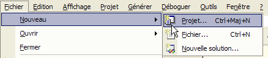
- Specify your project’s characteristics
 |
- Select the type of project you want to build; here, a VB.NET project (1)
- Select the type of application you want to build; here, a Windows application (2)
- Specify the folder where you want to place the project subfolder (3)
- Enter the project name (4). This will also be the name of the folder that will contain the project files
- The name of this folder is displayed in (5)
- A number of folders and files are then created under the i4 folder:
subfolders of the project1 folder  |
Of these files, only one is relevant: the form1.cs file, which is the source file associated with the form created by VS.NET. We’ll come back to this later.
5.2.2. The VS.NET interface windows
The VS.NET interface now displays certain elements of our i4 project:
We have a graphical user interface design window:
 |
By dragging controls from the toolbar (Toolbox 2) and dropping them onto the window pane (1), we can build a graphical user interface. If we hover the mouse over the "Toolbox," it expands to reveal a number of controls:

For now, we won’t use any of them. Still on the VS.NET screen, we find the “Explorer Solution” window:
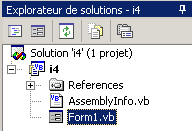
Initially, we won’t use this window much. It displays all the files that make up the project. We’re only interested in one of them: our program’s source file, in this case Form1.vb. Right-clicking on Form1.vb brings up a menu that lets you access either the source code for our GUI (View Code) or the GUI itself (Form Designer):

You can access both of these directly from the "Solution Explorer" window:
 |  |
The open windows "stack" in the main design window:

Here, Form1.vb[Design] refers to the design window and Form1.vb to the code window. Simply click on one of the tabs to switch between the two windows. Another important window displayed on the VS.NET screen is the Properties window:
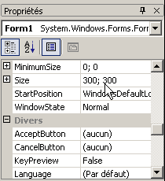
The properties displayed in the window are those of the control currently selected in the graphical design window. You can access different project windows using the View menu:

It includes the main windows just described, along with their keyboard shortcuts.
5.2.3. Running a Project
Even though we haven’t written any code, we have an executable project. Press F5 or Debug/Start to run it. We get the following window:
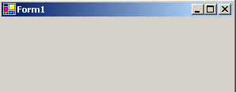
This window can be maximized, minimized, resized, and closed.
5.2.4. The code generated by VS.NET
Let’s look at the code (View/Code) for our application:
Public Class Form1
Inherits System.Windows.Forms.Form
#Region "Code generated by the Windows Form Designer"
Public Sub New()
MyBase.New()
'This call is required by the Windows Forms Designer.
InitializeComponent()
'Add any initialization after the InitializeComponent() call
End Sub
'The form's overridden Dispose method to clean up the component list.
Protected Overloads Overrides Sub Dispose(ByVal disposing As Boolean)
If disposing Then
If Not (components Is Nothing) Then
components.Dispose()
End If
End If
MyBase.Dispose(disposing)
End Sub
'Required by the Windows Forms Designer
Private components As System.ComponentModel.IContainer
'NOTE: The following procedure is required by the Windows Forms Designer
'It can be modified using the Windows Forms Designer.
'Do not modify it using the code editor.
<System.Diagnostics.DebuggerStepThrough()> Private Sub InitializeComponent()
components = New System.ComponentModel.Container()
Me.Text = "Form2"
End Sub
#End Region
End Class
A graphical user interface derives from the base class System.Windows.Forms.Form:
The Form base class defines a basic window with close and maximize/minimize buttons, adjustable size, and more, and handles events on these graphical objects. The form's constructor uses an InitializeComponent method in which the form's controls are created and initialized.
Public Sub New()
MyBase.New()
'This call is required by the Windows Form Designer.
InitializeComponent()
'Add any initialization after the InitializeComponent() call
End Sub
Any other work to be done in the constructor can be done after the InitializeComponent call. The InitializeComponent method
Private Sub InitializeComponent()
'
'Form1
'
Me.AutoScaleBaseSize = New System.Drawing.Size(5, 13)
Me.ClientSize = New System.Drawing.Size(292, 53)
Me.Name = "Form1"
Me.Text = "Form1"
End Sub
sets the title of the "Form1" window, its width (292), and its height (53). The window title is set by the Text property and the dimensions by the Size property. Size is defined in the System.Drawing namespace and is a structure. To run this application, we need to define the project’s main module. To do this, we use the [Projects/Properties] option:

In [Startup Object], we specify [Form1], which is the form we just created. To run the application, we use the [Debug/Start] option:
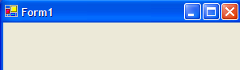
5.2.5. Compiling in a Command Prompt Window
Now, let’s try compiling and running this application in a DOS window:
dos>dir form1.vb
03/14/2004 11:53 514 Form1.vb
dos>vbc /r:system.dll /r:system.windows.forms.dll form1.vb
vbc: error BC30420: 'Sub Main' not found in 'Form1'.
The compiler indicates that it cannot find the [Main] procedure. Indeed, VS.NET did not generate it. However, we have already encountered it in the previous examples. It has the following form:
Shared Sub Main()
' we launch the app
Application.Run(New Form1) ' where Form1 is the form
End Sub
Let’s add the previous code to [Form1.vb] and recompile:
dos>vbc /r:system.dll /r:system.windows.forms.dll form2.vb
Microsoft (R) Visual Basic .NET Compiler version 7.10.3052.4
Form2.vb(41): error BC30451: The name 'Application' is not declared.
Application.Run(New Form2)
~~~~~~~~~~~
This time, the name [Application] is unknown. This simply means that we haven't imported its namespace [System.Windows.Forms]. Let's add the following statement:
then recompile:
This time, it works. Let's run it:
A Form1-type form is created and displayed. You can avoid adding the [Main] procedure by using the compiler’s /m option, which allows you to specify the class to execute if it inherits from System.Windows.Forms:
The /m:form2 option specifies that the class to be executed is the class named [form2].
5.2.6. Event handling
Once the form is displayed, the application listens for events that occur on the form (clicks, mouse movements, etc.) and executes those that the form handles. Here, our form does not handle any events other than those handled by the base Form class (clicks on close buttons, maximize/minimize buttons, window resizing, window movement, etc.). The generated form uses a components attribute that is not used anywhere. The Dispose method is also unnecessary here. The same applies to certain namespaces (Collections, ComponentModel, Data) that are used and the one defined for the projet1 project. Therefore, in this example, the code can be simplified to the following:
Imports System
Imports System.Drawing
Imports System.Windows.Forms
Public Class Form1
Inherits System.Windows.Forms.Form
' constructor
Public Sub New()
' Create the form with its components
InitializeComponent()
End Sub
Private Sub InitializeComponent()
' window size
Me.Size = New System.Drawing.Size(300, 300)
' window title
Me.Text = "Form1"
End Sub
Shared Sub Main()
' launch the app
Application.Run(New Form1)
End Sub
End Class
5.2.7. Conclusion
We will now accept the code generated by VS.NET as is and simply add our own code, specifically to handle events related to the various controls on the form.
5.3. Window with input field, button, and label
5.3.1. Graphical Design
In the previous example, we did not place any components in the window. We will start a new project called interface2. To do this, we will follow the procedure described earlier to create a project:

Now let’s build a window with a button, a label, and an input field:
 |
The fields are as follows:
No. | name | Type | role |
1 | lblInput | Label | a label |
2 | txtInput | TextBox | an input field |
3 | btnDisplay | Button | to display the contents of the txtSaisie text box in a dialog box |
You can proceed as follows to build this window: right-click inside the window outside of any component and select the Properties option to access the window's properties:

The Properties window then appears on the right:

Some of these properties are worth noting:
to set the window's background color | |
to set the color of the graphics or text in the window | |
to associate a menu with the window | |
to give the window a title | |
to set the window type | |
to set the font for text in the window | |
to set the window name |
Here, we set the Text and Name properties:
Zippers & buttons - 1 | |
frmInputButtons |
Using the "Toolbox" bar
- select the components you need
- drop them onto the window and set their correct dimensions
 | 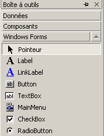 |
Once you have selected the component from the "toolbox," use the "Esc" key to hide the toolbar, then drop and resize the component. Do this for the three you need: Label, TextBox, Button. To align and size the components correctly, use the Format menu: |  |
The formatting process works as follows:
The Align option allows you to align components |  |
The Make Same Size option ensures that components have the same height or the same width: |  |
The Horizontal Spacing option, for example, to align components horizontally with equal spacing between them. The same applies for the Vertical Spacing option to align vertically. The Center in Form option allows you to center a component horizontally or vertically within the window: |  |
Once the components are correctly placed in the window, set their properties. To do this, right-click on the component and select the Properties option:
Select the component to open open its Properties window. In this window, modify the following properties: name: lblSaisie, text: Saisie
Select the component to open its properties window. In this window, modify the following properties: name: txtSaisie, text: leave blank
name: cmdAfficher, text: Display
text: Entries & Buttons - 1 | 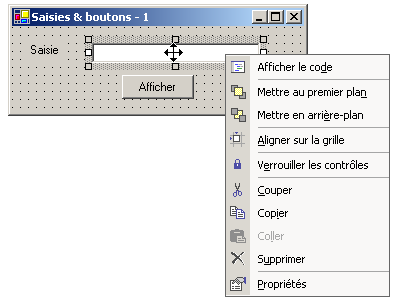 |
We can run (Ctrl-F5) our project to get a first look at the window in action: | |
Close the window. We still need to write the procedure associated with a click on the Display button.
5.3.2. Handling form events
Let’s look at the code generated by the visual designer:
...
Public Class frmSaisiesBoutons
Inherits System.Windows.Forms.Form
' components
Private components As System.ComponentModel.Container = Nothing
Friend WithEvents btnDisplay As System.Windows.Forms.Button
Friend WithEvents lblsaisie As System.Windows.Forms.Label
Friend WithEvents txtsaisie As System.Windows.Forms.TextBox
' constructor
Public Sub New()
InitializeComponent()
End Sub
...
' initialize components
Private Sub InitializeComponent()
...
End Sub
End Class
First, note the specific declaration of the components:
- the Friend keyword indicates that the component is visible to all classes in the project
- the WithEvents keyword indicates that the component generates events. We will now look at how to handle these events
Display the form’s code window (View/Code or F7):
 |
The window above displays two drop-down lists (1) and (2). List (1) is the list of form components:

List (2) shows the events associated with the component selected in (1):

One of the events associated with the component is displayed in bold (here, Click). This is the component’s default event. You can access the handler for this specific event by double-clicking the component in the design window. VB.NET then automatically generates the skeleton of the event handler in the code window and positions the cursor on it. To access the handlers for the other events, go to the code window, select the component from the list (1), and select the event from (2). VB.NET then generates the skeleton of the event handler or positions the cursor on it if it was already generated:
Private Sub btnAfficher_Click(ByVal sender As System.Object, ByVal e As System.EventArgs) Handles btnAfficher.Click
...
End Sub
By default, VB.NET names the event handler for event E of component C. You can change this name if you wish. However, this is not recommended. VB developers generally keep the name generated by VB, which ensures naming consistency across all VB programs. The association of the btnAfficher_Click procedure with the Click event of the btnAfficher component is not done via the procedure name but via the handles keyword:
Handles btnAfficher.Click
In the code above, the handles keyword specifies that the procedure handles the Click event of the btnAfficher component. The event handler has two parameters:
the object that triggered the event (in this case, the button) | |
an EventArgs object that details the event that occurred |
We won’t use any of these parameters here. All that’s left is to complete the code. Here, we want to display a dialog box containing the contents of the txtSaisie field:
Private Sub btnAfficher_Click(ByVal sender As Object, ByVal e As System.EventArgs)
' display the text entered in the TxtSaisie text box
MessageBox.Show("text entered= " + txtsaisie.Text, "Input Verification", MessageBoxButtons.OK, MessageBoxIcon.Information)
End Sub
When the application is run, the following occurs:
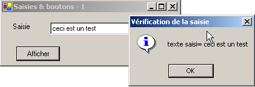
5.3.3. Another method for handling events
For the btnAfficher button, VS.NET generated the following code:
Private Sub InitializeComponent()
...
'
'btnDisplay
'
Me.btnDisplay.Location = New System.Drawing.Point(102, 48)
Me.btnDisplay.Name = "btnDisplay"
Me.btnDisplay.Size = New System.Drawing.Size(88, 24)
Me.btnDisplay.TabIndex = 2
Me.btnDisplay.Text = "Display"
...
End Sub
...
' event handler for click on the cmdShow button
Private Sub btnAfficher_Click(ByVal sender As System.Object, ByVal e As System.EventArgs) Handles btnAfficher.Click
...
End Sub
We can associate the btnAfficher_Click procedure with the Click event of the btnAfficher button in another way:
Private Sub InitializeComponent()
...
'
'btnAfficher
'
Me.btnDisplay.Location = New System.Drawing.Point(102, 48)
Me.btnDisplay.Name = "btnDisplay"
Me.btnDisplay.Size = New System.Drawing.Size(88, 24)
Me.btnDisplay.TabIndex = 2
Me.btnDisplay.Text = "Display"
AddHandler btnDisplay.Click, AddressOf btnDisplay_Click
...
End Sub
...
' event handler for click on cmdShow button
Private Sub btnDisplay_Click(ByVal sender As System.Object, ByVal e As System.EventArgs)
...
End Sub
The btnAfficher_Click procedure has lost the Handles keyword, thereby losing its association with the btnAfficher.Click event. This association is now made using the AddHandler keyword:
AddHandler btnAfficher.Click, AddressOf btnAfficher_Click
The code above, which will be placed in the form's InitializeComponent procedure, associates the procedure named btnAfficher_Click with the btnAfficher.Click event. Furthermore, the btnAfficher component no longer requires the WithEvents keyword:
Friend btnAfficher As System.Windows.Forms.Button
What is the difference between the two methods?
- The handles keyword only allows an event to be associated with a procedure at design time. The designer knows in advance that a procedure P must handle events E1, E2, ... and writes the code
Private Sub btnAfficher_Click(ByVal sender As System.Object, ByVal e As System.EventArgs) handles E1, E2, ..., En
It is indeed possible for a procedure to handle multiple events.
- The addhandler keyword allows an event to be associated with a procedure at runtime. This is useful in a producer-consumer event framework. An object produces a specific event that may be of interest to other objects. These objects subscribe to the producer to receive the event (a temperature exceeding a critical threshold, for example). During the application’s execution, the event producer will be required to execute various instructions:
where E is the event produced by the producer and P1 is one of the procedures belonging to the various objects consuming this event. We will have the opportunity to revisit a producer-consumer event application in a later chapter.
5.3.4. Conclusion
From the two projects studied, we can conclude that once the graphical user interface is built with VS.NET, the developer’s task is to write the event handlers for the events they wish to manage within that interface. From now on, we will present only the code for these handlers.
5.4. Some Useful Components
We will now present various applications that utilize the most common components to explore their main methods and properties. For each application, we will present the graphical user interface and the relevant code, particularly the event handlers.
5.4.1. Form
We’ll start by introducing the essential component: the form onto which components are placed. We’ve already covered some of its basic properties. Here, we’ll focus on a few important form events.
The form is loading | |
The form is closing | |
The form is closed |
The Load event occurs before the form is even displayed. The Closing event occurs when the form is being closed. This closing can still be stopped programmatically. We create a form named Form1 without any components:

We handle the three previous events:
Private Sub Form1_Load(ByVal sender As Object, ByVal e As System.EventArgs) Handles MyBase.Load
' initial form load
MessageBox.Show("Evt Load", "Load")
End Sub
Private Sub Form1_Closing(ByVal sender As Object, ByVal e As System.ComponentModel.CancelEventArgs) Handles MyBase.Closing
' the form is closing
MessageBox.Show("Evt Closing", "Closing")
' asking for confirmation
Dim response As DialogResult = MessageBox.Show("Do you really want to exit the application?", "Closing", MessageBoxButtons.YesNo, MessageBoxIcon.Question)
If response = DialogResult.No Then
e.Cancel = True
End If
End Sub
Private Sub Form1_Closed(ByVal sender As Object, ByVal e As System.EventArgs) Handles MyBase.Closed
' The form is closing
MessageBox.Show("Evt Closed", "Closed")
End Sub
We use the MessageBox function to be notified of the various events. The Closing event occurs when the user closes the window. |  |
We then ask them if they really want to exit the application: |  |
If they answer No, we set the Cancel property of the CancelEventArgs that the method received as a parameter. If we set this property to False, the of the window is canceled; otherwise, it proceeds: |  |
5.4.2. Label controls and TextBox controls
We have already encountered these two components. Label is a text component and TextBox is an input field component. Their main property is Text, which refers to either the content of the input field or the label text. This property is read/write. The event typically used for TextBox is TextChanged, which signals that the user has modified the input field. Here is an example that uses the TextChanged event to track changes in an input field:
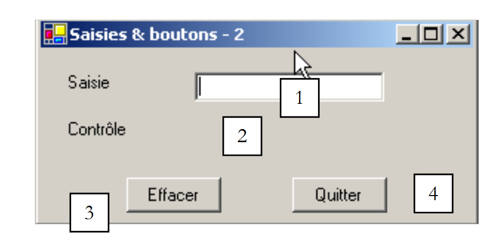 |
No. | type | name | role |
1 | TextBox | txtInput | input field |
2 | Label | lblControl | displays the text from 1 in real time |
3 | Button | cmdClear | to clear fields 1 and 2 |
4 | Button | cmdExit | to exit the application |
The relevant code for this application is the event handlers:
' Click on the Exit button
Private Sub cmdQuitter_Click(ByVal sender As Object, ByVal e As System.EventArgs) _
Handles cmdQuitter.Click
' Click on the Exit button - exit the application
Application.Exit()
End Sub
' txtSaisie field changed
Private Sub txtSaisie_TextChanged(ByVal sender As Object, ByVal e As System.EventArgs) _
Handles txtSaisie.TextChanged
' The TextBox content has changed - copy it to the Label lblControle
lblControl.Text = txtInput.Text
End Sub
' Click on the Clear button
Private Sub cmdClear_Click(ByVal sender As Object, ByVal e As System.EventArgs) _
Handles cmdEffacer.Click
' Clear the contents of the text box
txtInput.Text = ""
End Sub
' a key has been pressed
Private Sub txtInput_KeyPress(ByVal sender As Object, ByVal e As System.Windows.Forms.KeyPressEventArgs) _
Handles txtSaisie.KeyPress
' check which key was pressed
Dim key As Char = e.KeyChar
If key = ControlChars.Cr Then
MessageBox.Show(txtSaisie.Text, "Control", MessageBoxButtons.OK, MessageBoxIcon.Information)
e.Handled = True
End If
End Sub
Note how the application is terminated in the cmdQuitter_Click procedure: Application.Exit(). The following example uses a multi-line TextBox:
 |
The list of controls is as follows:
No. | Type | name | role |
1 | TextBox | txtMultiLines | multi-line input field |
2 | TextBox | txtAdd | single-line input field |
3 | Button | btnAdd | Subtract 2 from 1 |
To make a TextBox multi-line, set the following control properties:
to allow multiple lines of text | |
to specify whether the control should have scroll bars (Horizontal, Vertical, Both) or not (None) | |
if set to true, the Enter key will move to the next line | |
if set to true, the Tab key will insert a tab in the text |
The relevant code is the one that handles the click on the [Add] button and the one that handles changes to the [txtAdd] input field:
' btnAdd_Click
Private Sub btnAdd_Click1(ByVal sender As Object, ByVal e As System.EventArgs) _
Handles btnAdd.Click
' Append the contents of txtAjout to those of txtMultilignes
txtMultilines.Text &= txtAdd.Text
txtAdd.Text = ""
End Sub
' txtAjout_TextChanged event
Private Sub txtAdd_TextChanged1(ByVal sender As Object, ByVal e As System.EventArgs) _
Handles txtAdd.TextChanged
' Set the state of the Add button
btnAdd.Enabled = txtAdd.Text.Trim() <> ""
End Sub
5.4.3. ComboBox drop-down lists
 | 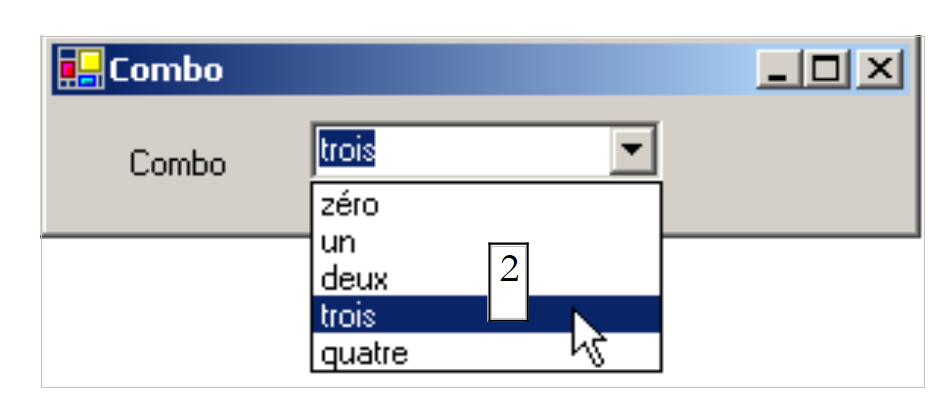 |
A ComboBox component is a drop-down list combined with an input field: the user can either select an item from (2) or type text into (1). There are three types of ComboBox defined by the Style property:
non-dropdown list with edit box | |
drop-down list with edit box | |
drop-down list without an edit box |
By default, the type of a ComboBox is DropDown. To learn more about the ComboBox class, type ComboBox in the Help index (Help/Index). The ComboBox class has a single constructor:
Public Sub New() | creates an empty ComboBox object |
The items in the ComboBox are available in the Items property:
This is an indexed property, where Items(i) refers to the i-th item in the Combo. Let C be a Combo and C.Items its list of items. We have the following properties:
number of items in the ComboBox | |
element i of the ComboBox | |
adds the object o as the last element of the combo | |
adds an array of objects to the end of the combo | |
adds the object o at position i in the combo | |
removes element i from the combo box | |
removes object o from the combo box | |
clears all items from the combo box | |
returns the position i of object o in the combo box |
It may seem surprising that a combo box can contain objects when it usually contains strings. Visually, this is indeed the case. If a ComboBox contains an object obj, it displays the string obj.ToString(). Recall that every object has a ToString method inherited from the object class, which returns a string that "represents" the object. The selected item in the combo box C is C.SelectedItem or C.Items(C.SelectedIndex), where C.SelectedIndex is the index of the selected item, starting from zero for the first item.
When an item is selected from the drop-down list, the SelectedIndexChanged event is triggered, which can then be used to detect a change in the combo box's selection. In the following application, we use this event to display the item that has been selected from the list.

We are only showing the relevant code for the window. In the form's constructor, we populate the combo box:
Public Sub New()
' create form
InitializeComponent()
' populate combo
cmbNumbers.Items.AddRange(New String() {"zero", "one", "two", "three", "four"})
' Select the first item in the list
cmbNumbers.SelectedIndex = 0
End Sub
We handle the combo's SelectedIndexChanged event, which signals that a new item has been selected:
Private Sub cmbNumbers_SelectedIndexChanged(ByVal sender As Object, ByVal e As System.EventArgs) _
Handles cmbNumbers.SelectedIndexChanged
' The selected item has changed—we display it
MessageBox.Show("Selected item: (" & cmbNumbers.SelectedItem.ToString & "," & cmbNumbers.SelectedIndex & ")", "Combo", MessageBoxButtons.OK, MessageBoxIcon.Information)
End Sub
5.4.4. ListBox component
We propose to build the following interface:
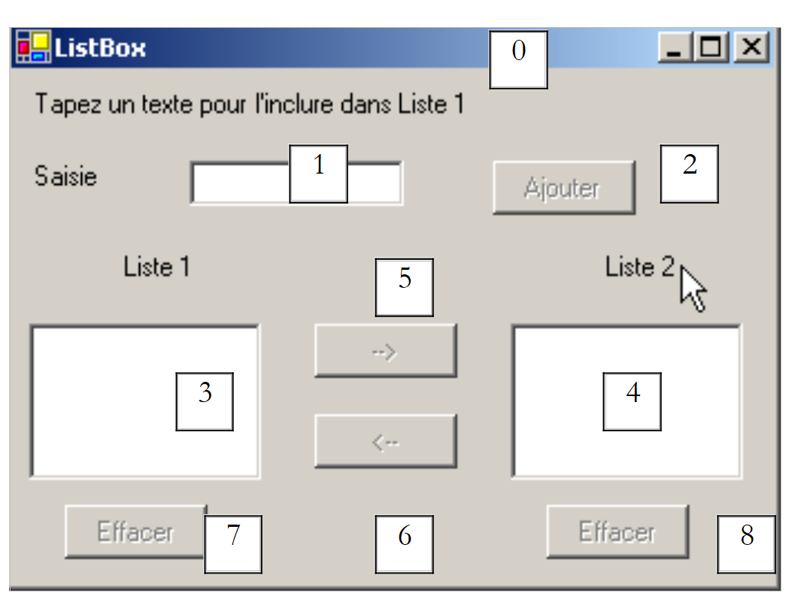 |
The components of this window are as follows:
No. | Type | name | role/properties |
0 | Form | Form1 | form - BorderStyle=FixedSingle |
1 | TextBox | txtInput | input field |
2 | Button | btnAdd | button to add the contents of input field 1 to list 3 |
3 | ListBox | listBox1 | List 1 |
4 | ListBox | listBox2 | list 2 |
5 | Button | btn1TO2 | transfers the selected items from list 1 to list 2 |
6 | Button | cmd2T0 | does the opposite |
7 | Button | btnClear1 | clears list 1 |
8 | Button | btnClear2 | clears list 2 |
- The user types text into field 1. They add it to list 1 using the Add button (2). The input field (1) is then cleared, and the user can add a new item.
- They can transfer items from one list to another by selecting the item to be transferred in one of the lists and choosing the appropriate transfer button 5 or 6. The transferred item is added to the end of the destination list and removed from the source list.
- They can double-click on an item in List 1. This item is then transferred to the input box for editing and removed from List 1.
The buttons are enabled or disabled according to the following rules:
- the Add button is enabled only if there is non-empty text in the input field
- Button 5 for transferring from List 1 to List 2 is enabled only if an item is selected in List 1
- Button 6 for transferring from List 2 to List 1 is enabled only if an item is selected in List 2
- Buttons 7 and 8 for clearing lists 1 and 2 are enabled only if the list to be cleared contains items.
Under the above conditions, all buttons must be disabled when the application starts. This means the Enabled property of the buttons must be set to false. This can be done during design time, which will generate the corresponding code in the InitializeComponent method, or we can do it ourselves in the constructor as shown below:
Public Sub New()
' Initial creation of the form
InitializeComponent()
' Additional initializations
' Disable a number of buttons
btnAdd.Enabled = False
btn1TO2.Enabled = False
btn2TO1.Enabled = False
btnDelete1.Enabled = False
btnDelete2.Enabled = False
End Sub
The state of the Add button is controlled by the content of the text input field. The TextChanged event allows us to track changes to this content:
' change in text input field
Private Sub txtInput_TextChanged(ByVal sender As Object, ByVal e As System.EventArgs) _
Handles txtInput.TextChanged
' the content of txtSaisie has changed
' the Add button is enabled only if the text is not empty
btnAdd.Enabled = txtInput.Text.Trim() <> ""
End Sub
The state of the transfer buttons depends on whether or not an item has been selected in the list they control:
' Change in the selected item without ListBox1
Private Sub listBox1_SelectedIndexChanged(ByVal sender As Object, ByVal e As System.EventArgs) _
Handles listBox1.SelectedIndexChanged
' an item has been selected
' Enable the button to transfer from 1 to 2
btn1TO2.Enabled = True
End Sub
' Change the selected item without listbox2
Private Sub listBox2_SelectedIndexChanged(ByVal sender As Object, ByVal e As System.EventArgs) _
Handles listBox2.SelectedIndexChanged
' An item has been selected
' Enable the button to transfer from 2 to 1
btn2TO1.Enabled = True
End Sub
The code associated with clicking the Add button is as follows:
' Click on the Add button
Private Sub btnAdd_Click(ByVal sender As Object, ByVal e As System.EventArgs) _
Handles btnAdd.Click
' Add a new item to List 1
listBox1.Items.Add(txtInput.Text.Trim())
' Clear the input
txtSaisie.Text = ""
' List 1 is not empty
btnClear1.Enabled = True
' Return focus to the input box
txtInput.Focus()
End Sub
Note the Focus method, which allows you to set the "focus" on a form control. The code associated with clicking the Clear buttons:
' Click on btnClear1
Private Sub btnClear1_Click(ByVal sender As Object, ByVal e As System.EventArgs) _
Handles btnDelete1.Click
' Clear list 1
listBox1.Items.Clear()
btnClear1.Enabled = False
End Sub
' Click on btnClear2
Private Sub btnClear2_Click(ByVal sender As Object, ByVal e As System.EventArgs)
' Clear list 2
listBox2.Items.Clear()
btnClear2.Enabled = False
End Sub
The code to transfer selected items from one list to another:
' Click on btn1to2
Private Sub btn1TO2_Click(ByVal sender As Object, ByVal e As System.EventArgs) _
Handles btn1TO2.Click
' Transfer the selected item from List 1 to List 2
transfer(listBox1, listBox2)
' Clear buttons
btnClear2.Enabled = True
btnClear1.Enabled = listBox1.Items.Count <> 0
' Transfer buttons
btn1TO2.Enabled = False
btn2TO1.Enabled = False
End Sub
' Click on btn2to1 button
Private Sub btn2TO1_Click(ByVal sender As Object, ByVal e As System.EventArgs) _
Handles btn2TO1.Click
' Transfer the selected item from List 2 to List 1
transfer(listBox2, listBox1)
' Clear buttons
btnClear1.Enabled = True
btnClear2.Enabled = listBox2.Items.Count <> 0
' Transfer buttons
btn1TO2.Enabled = False
btn2TO1.Enabled = False
End Sub
' transfer
Private Sub transfer(ByVal l1 As ListBox, ByVal l2 As ListBox)
' Transfer the selected item from ListBox1 to ListBox2
' Is an item selected?
If l1.SelectedIndex = -1 Then Return
' Add to l2
l2.Items.Add(l1.SelectedItem)
' Remove from l1
l1.Items.RemoveAt(l1.SelectedIndex)
End Sub
First, we create a method
Private Sub transfer(ByVal l1 As ListBox, ByVal l2 As ListBox)
that transfers the selected item from list l1 to list l2. This allows us to use a single method instead of two to transfer an item from ListBox1 to ListBox2 or from ListBox2 to ListBox1. Before performing the transfer, we ensure that an item is indeed selected in list l1:
' Is an item selected?
If l1.SelectedIndex = -1 Then Return
The SelectedIndex property is -1 if no item is currently selected. In the procedures
Private Sub btnXTOY_Click(ByVal sender As Object, ByVal e As System.EventArgs) _
Handles btnXTOY.Click
we transfer the contents of list X to list Y and update the state of certain controls to reflect the new state of the lists.
5.4.5. CheckBox checkboxes, ButtonRadio radio buttons
We propose to write the following application:
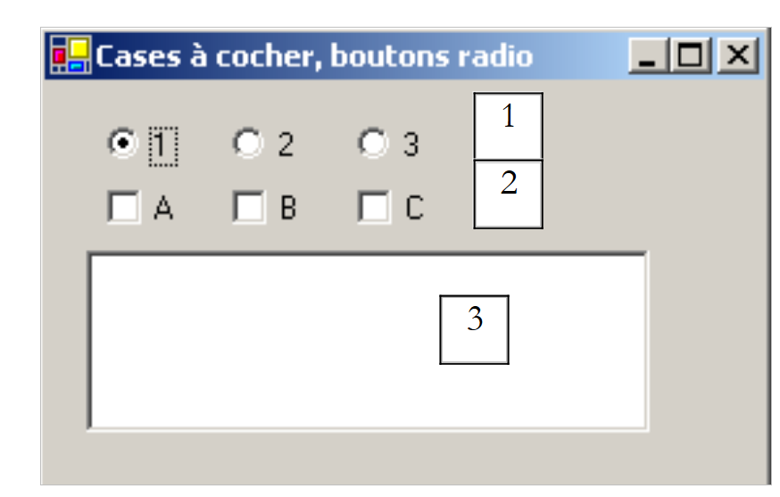 |
The window components are as follows:
No. | Type | name | role |
1 | RadioButton | radioButton1 radioButton2 radioButton3 | 3 radio buttons |
2 | CheckBox | checkBox1 checkBox2 checkbox3 | 3 checkboxes |
3 | ListBox | lstValues | a list |
If we create the three radio buttons one after the other, they are part of the same group by default. Therefore, when one is selected, the others are not. The event we are interested in for these six controls is the CheckChanged event, which indicates that the state of the checkbox or radio button has changed. This state is represented in both cases by the Boolean property Check, which, when true, means that the control is checked. Here, we have used a single method to handle all six CheckChanged events; the method displays:
'display
Private Sub display(ByVal sender As Object, ByVal e As System.EventArgs) _
Handles checkBox1.CheckedChanged, checkBox2.CheckedChanged, checkBox3.CheckedChanged, _
radioButton1.CheckedChanged, radioButton2.CheckedChanged, radioButton3.CheckedChanged
' displays the state of the radio button or checkbox
' Is it a checkbox?
If (TypeOf(sender) Is CheckBox) Then
Dim chk As CheckBox = CType(sender, CheckBox)
lstValues.Items.Insert(0, chk.Name & "=" & chk.Checked)
End If
' Is it a radio button?
If (TypeOf (sender) Is RadioButton) Then
Dim rdb As RadioButton = CType(sender, RadioButton)
lstValues.Items.Insert(0, rdb.Name & "=" & rdb.Checked)
End If
End Sub
The syntax TypeOf (sender) Is CheckBox allows us to check if the sender object is of type CheckBox. This then allows us to cast it to the exact type of sender. The method displays the name of the component that triggered the event and the value of its Checked property in the lstValeurs list. At runtime, we see that clicking a radio button triggers two CheckChanged events: one on the previously checked button, which becomes "unchecked," and the other on the new button, which becomes "checked."
5.4.6. ScrollBar controls
There are several types of scroll bars: the horizontal scroll bar (hScrollBar), the vertical scroll bar (vScrollBar), and the numeric up/down control (NumericUpDown). | 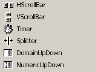 |
Let’s create the following application:
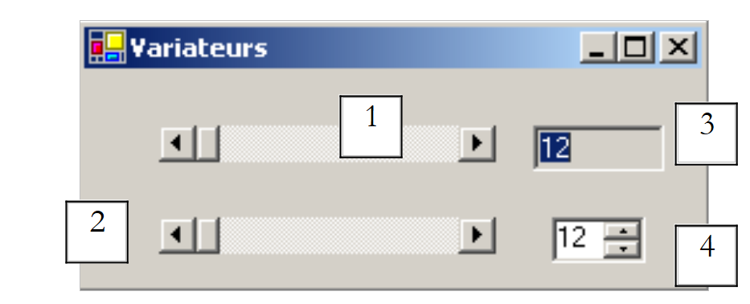 |
No. | type | name | role |
1 | hScrollBar | hScrollBar1 | a horizontal scrollbar |
2 | hScrollBar | hScrollBar2 | a horizontal slider that follows the changes in slider 1 |
3 | TextBox | txtValue | displays the value of the horizontal slider ReadOnly=true to prevent any input |
4 | NumericUpDown | incrementer | allows you to set the value of slider 2 |
- A ScrollBar slider allows the user to select a value from a range of integer values represented by the slider's "band," along which a cursor moves. The slider's value is available in its Value property.
- For a horizontal slider, the left end represents the minimum value of the range, the right end the maximum value, and the cursor the currently selected value. For a vertical slider, the minimum is represented by the top end, and the maximum by the bottom end. These values are represented by the Minimum and Maximum properties and default to 0 and 100.
- Clicking on the ends of the slider changes the value by an increment (positive or negative) based on the clicked end, referred to as SmallChange, which defaults to 1.
- Clicking on either side of the slider changes the value by one increment (positive or negative) depending on which end is clicked, a setting called LargeChange, which defaults to 10.
- When you click on the top end of a vertical slider, its value decreases. This may surprise the average user, who normally expects to see the value "increase." You can resolve this issue by setting the SmallChange and LargeChange properties to negative values
- These five properties (Value, Minimum, Maximum, SmallChange, LargeChange) are accessible for both reading and writing.
- The slider’s main event is the one that signals a change in value: the Scroll event.
A NumericUpDown component is similar to a slider: it also has Minimum, Maximum, and Value properties, with default values of 0, 100, and 0, respectively. However, in this case, the Value property is displayed in an input box that is an integral part of the control. The user can modify this value themselves unless the control’s ReadOnly property has been set to true. The increment value is set by the Increment property, which defaults to 1. The main event of the NumericUpDown component is the one that signals a value change: the ValueChanged event. The relevant code for our application is as follows:
The form is formatted during its construction:
' constructor
Public Sub New()
' initial form creation
InitializeComponent()
' we give drive 2 the same characteristics as drive 1
hScrollBar2.Minimum = hScrollBar1.Value
hScrollBar2.Minimum = hScrollBar1.Minimum
hScrollBar2.Maximum = hScrollBar1.Maximum
hScrollBar2.LargeChange = hScrollBar1.LargeChange
hScrollBar2.SmallChange = hScrollBar1.SmallChange
' same for the counter
incrementer.Minimum = hScrollBar1.Value
incrementer.Minimum = hScrollBar1.Minimum
incrementer.Maximum = hScrollBar1.Maximum
incrementer.Increment = hScrollBar1.SmallChange
' Set the TextBox to the value of slider 1
txtValue.Text = "" & hScrollBar1.Value
End Sub
The handler that tracks changes in the value of slider 1:
' hscrollbar1 slider handler
Private Sub hScrollBar1_Scroll(ByVal sender As Object, ByVal e As System.Windows.Forms.ScrollEventArgs) _
Handles hScrollBar1.Scroll
' change in the value of slider 1
' update its value on slider 2 and in the TxtValue textbox
hScrollBar2.Value = hScrollBar1.Value
txtValue.Text = "" & hScrollBar1.Value
End Sub
The handler that tracks changes in the value of slider 2:
' hscrollbar2 slider handler
Private Sub hScrollBar2_Scroll(ByVal sender As Object, ByVal e As System.Windows.Forms.ScrollEventArgs) _
Handles hScrollBar2.Scroll
' We prevent any changes to slider 2
' by forcing it to retain the value of slider 1
e.NewValue = hScrollBar1.Value
End Sub
The handler that tracks changes in the scroll bar:
' Incrementer handler
Private Sub Incrementer_ValueChanged(ByVal sender As Object, ByVal e As System.EventArgs) _
Handles Incrementer.ValueChanged
' Set the value of drive 2
hScrollBar2.Value = CType(incrementer.Value, Integer)
End Sub
5.5. Mouse Events
When drawing in a container, it is important to know the mouse position, for example, to display a point when clicked. Mouse movements trigger events in the container within which the mouse is moving.
 | 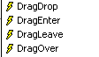 |
The mouse has just entered the control's area | |
The mouse has just left the control's area | |
The mouse is moving within the control's area | |
Left mouse button pressed | |
Left mouse button released | |
The user drops an object onto the control | |
The user enters the control's area while dragging an object | |
The user exits the control's area while dragging an object | |
The user moves over the control's area while dragging an object |
Here is a program to help you better understand when the various mouse events occur:
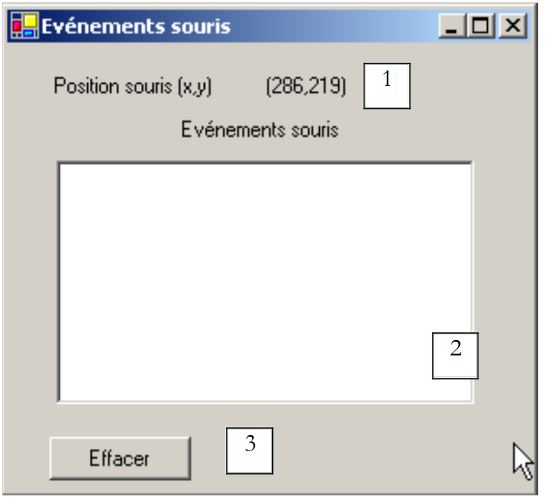 |
No. | type | name | role |
1 | Label | lblPosition | to display the mouse position in form 1, list 2, or button 3 |
2 | ListBox | lstEvts | to display mouse events other than MouseMove |
3 | Button | btnClear | to clear the contents of 2 |
The event handlers are as follows. To track mouse movements across the three controls, we write a single handler:
' event form1_mousemove
Private Sub Form1_MouseMove(ByVal sender As System.Object, ByVal e As System.Windows.Forms.MouseEventArgs) _
Handles MyBase.MouseMove, lstEvts.MouseMove, btnClear.MouseMove, lstEvts.MouseMove
' mouse move - display its coordinates (X,Y)
lblPosition.Text = "(" & e.X & "," & e.Y & ")"
End Sub
It is important to note that every time the mouse enters the area of a control, its coordinate system changes. Its origin (0,0) is the upper-left corner of the control it is currently on. Thus, during execution, when moving the mouse from the form to the button, the change in coordinates is clearly visible. To better see these changes in the mouse’s scope, you can use the Cursor property of the controls:

This property allows you to set the shape of the mouse cursor when it enters the control’s area. Thus, in our example, we have set the cursor to Default for the form itself, Hand for List 2, and No for Button 3, as shown in the screenshots below.


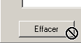
In the [InitializeComponent] method, the code generated by these choices is as follows:
Me.lstEvts.Cursor = System.Windows.Forms.Cursors.Hand
Me.btnEffacer.Cursor = System.Windows.Forms.Cursors.No
Additionally, to detect mouse entries and exits on List 2, we handle the MouseEnter and MouseLeave events for that list:
' evt lstEvts_MouseEnter
Private Sub lstEvts_MouseEnter(ByVal sender As System.Object, ByVal e As System.EventArgs) _
Handles lstEvts.MouseEnter
display("MouseEnter on list")
End Sub
' lstEvts_MouseLeave event
Private Sub lstEvts_MouseLeave(ByVal sender As System.Object, ByVal e As System.EventArgs) _
Handles lstEvts.MouseLeave
display("MouseLeave on list")
End Sub
' display
Private Sub display(ByVal message As String)
' displays the message at the top of the evts list
lstEvts.Items.Insert(0, message)
End Sub

To handle clicks on the form, we handle the MouseDown and MouseUp events:
' Form1_MouseDown event
Private Sub Form1_MouseDown(ByVal sender As System.Object, ByVal e As System.Windows.Forms.MouseEventArgs) _
Handles MyBase.MouseDown
display("MouseDown on form")
End Sub
' Form1_MouseUp event
Private Sub Form1_MouseUp(ByVal sender As System.Object, ByVal e As System.Windows.Forms.MouseEventArgs) _
Handles MyBase.MouseUp
display("MouseUp on form")
End Sub

Finally, the code for the Click event handler on the Delete button:
' btnClear_Click
Private Sub btnDelete_Click(ByVal sender As System.Object, ByVal e As System.EventArgs) _
Handles btnDelete.Click
' clears the list of events
lstEvts.Items.Clear()
End Sub
5.6. Create a window with a menu
Now let's see how to create a window with a menu. We will create the following window:
 |
Control 1 is a read-only TextBox (ReadOnly=true) named txtStatut. The menu tree is as follows:
 | 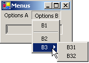 |
Menu options are controls just like other visual components and have properties and events. For example, the property table for menu option A1:

Two properties are used in our example:
the name of the menu control | |
the label of the menu option |
The properties of the various menu options in our example are as follows:
Name | Text |
mnuA | options A |
mnuA1 | A1 |
mnuA2 | A2 |
mnuA3 | A3 |
mnuB | options B |
mnuB1 | B1 |
mnuSep1 | - (separator) |
mnuB2 | B2 |
mnuB3 | B3 |
mnuB31 | B31 |
mnuB32 | B32 |
To create a menu, select the "MainMenu" component from the "ToolBox" bar:
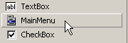
You will then have an empty menu placed on the form with empty boxes labeled "Type Here." Simply enter the various menu options there:

To insert a separator between two options, as shown above between options B1 and B2, position the cursor where you want the separator to appear in the menu, right-click, and select the Insert Separator option:

If you run the application using Ctrl+F5, you’ll see a form with a menu that doesn’t do anything yet. Menu options are treated as components: they have properties and events. In the [code window], select the mnuA1 component, then select the associated events:

If you trigger the Click event above, VS.NET automatically generates the following procedure:
Private Sub mnuA1_Click(ByVal sender As Object, ByVal e As System.EventArgs) Handles mnuA.Click
....
End Sub
We could proceed this way for all menu options. Here, the same procedure can be used for all options. So we rename the previous procedure *to display* and declare the events it handles:
Private Sub display(ByVal sender As Object, ByVal e As System.EventArgs) _
Handles mnuA1.Click, mnuA2.Click, mnuB1.Click, mnuB2.Click, mnuB31.Click, mnuB32.Click
' Displays the name of the selected submenu in the TextBox
txtStatut.Text = (CType(sender, MenuItem)).Text
End Sub
In this method, we simply display the Text property of the menu option that triggered the event. The event source sender is of type Object. The menu options are of type MenuItem, so we must cast from Object to MenuItem here. Run the application and select option A1 to see the following message:
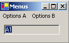
The relevant code for this application, aside from the Display method, is the code for building the menu in the form’s constructor (InitializeComponent):
Private Sub InitializeComponent()
Me.mainMenu1 = New System.Windows.Forms.MainMenu
Me.mnuA = New System.Windows.Forms.MenuItem
Me.mnuA1 = New System.Windows.Forms.MenuItem
Me.mnuA2 = New System.Windows.Forms.MenuItem
Me.mnuA3 = New System.Windows.Forms.MenuItem
Me.mnuB = New System.Windows.Forms.MenuItem
Me.mnuB1 = New System.Windows.Forms.MenuItem
Me.mnuB2 = New System.Windows.Forms.MenuItem
Me.mnuB3 = New System.Windows.Forms.MenuItem
Me.mnuB31 = New System.Windows.Forms.MenuItem
Me.mnuB32 = New System.Windows.Forms.MenuItem
Me.txtStatus = New System.Windows.Forms.TextBox
Me.mnuSep1 = New System.Windows.Forms.MenuItem
Me.SuspendLayout()
'
' mainMenu1
'
Me.mainMenu1.MenuItems.AddRange(New System.Windows.Forms.MenuItem() {Me.mnuA, Me.mnuB})
'
' mnuA
'
Me.mnuA.Index = 0
Me.mnuA.MenuItems.AddRange(New System.Windows.Forms.MenuItem() {Me.mnuA1, Me.mnuA2, Me.mnuA3})
Me.mnuA.Text = "Options A"
'
' mnuA1
'
Me.mnuA1.Index = 0
Me.mnuA1.Text = "A1"
'
' mnuA2
'
Me.mnuA2.Index = 1
Me.mnuA2.Text = "A2"
'
' mnuA3
'
Me.mnuA3.Index = 2
Me.mnuA3.Text = "A3"
'
' mnuB
'
Me.mnuB.Index = 1
Me.mnuB.MenuItems.AddRange(New System.Windows.Forms.MenuItem() {Me.mnuB1, Me.mnuSep1, Me.mnuB2, Me.mnuB3})
Me.mnuB.Text = "Options B"
'
' mnuB1
'
Me.mnuB1.Index = 0
Me.mnuB1.Text = "B1"
'
' mnuB2
'
Me.mnuB2.Index = 2
Me.mnuB2.Text = "B2"
'
' mnuB3
'
Me.mnuB3.Index = 3
Me.mnuB3.MenuItems.AddRange(New System.Windows.Forms.MenuItem() {Me.mnuB31, Me.mnuB32})
Me.mnuB3.Text = "B3"
'
' mnuB31
'
Me.mnuB31.Index = 0
Me.mnuB31.Text = "B31"
'
' mnuB32
'
Me.mnuB32.Index = 1
Me.mnuB32.Text = "B32"
'
' txtStatus
'
Me.txtStatus.Location = New System.Drawing.Point(8, 8)
Me.txtStatus.Name = "txtStatus"
Me.txtStatus.ReadOnly = True
Me.txtStatus.Size = New System.Drawing.Size(112, 20)
Me.txtStatus.TabIndex = 0
Me.txtStatus.Text = ""
'
' mnuSep1
'
Me.mnuSep1.Index = 1
Me.mnuSep1.Text = "-"
'
' Form1
'
Me.AutoScaleBaseSize = New System.Drawing.Size(5, 13)
Me.ClientSize = New System.Drawing.Size(136, 42)
Me.Controls.Add(txtStatus)
Me.Menu = Me.mainMenu1
Me.Name = "Form1"
Me.Text = "Menus"
Me.ResumeLayout(False)
End Sub
Note the statement that associates the menu with the form:
Me.Menu = Me.mainMenu1
5.7. Non-visual components
We will now look at a number of non-visual components: these are used during design but are not visible during runtime.
5.7.1. OpenFileDialog and SaveFileDialog dialog boxes
We are going to build the following application:
 |
The controls are as follows:
No. | Type | name | role |
1 | Multi-line TextBox | txtText | text typed by the user or loaded from a file |
2 | Button | btnSave | saves the text from 1 to a text file |
3 | Button | btnLoad | allows you to load the contents of a text file into 1 |
4 | Button | btnClear | clears the contents of 1 |
Two non-visual controls are used:

When they are dragged from the "ToolBox" and dropped onto the form, they are placed in a separate area at the bottom of the form. The "Dialog" components are dragged from the "ToolBox":

The code for the Clear button is simple:
Private Sub btnDelete_Click(ByVal sender As Object, ByVal e As System.EventArgs) _
Handles btnClear.Click
' clear the text box
txtText.Text = ""
End Sub
The SaveFileDialog class is defined as follows:

It inherits from several class levels. Of its many properties and methods, we will focus on the following:
the file types offered in the file type drop-down list of the dialog box | |
the index of the file type displayed by default in the list above. Starts at 0. | |
the folder initially displayed for saving the file | |
The name of the save file specified by the user | |
A method that displays the save dialog box. Returns a DialogResult. |
The ShowDialog method displays a dialog box similar to the following:
 |
drop-down list generated from the Filter property. The default file type is determined by FilterIndex | |
current directory, set by InitialDirectory if this property has been specified | |
the name of the file selected or typed directly by the user. Will be available in the FileName property | |
Save/Cancel buttons. If the Save button is used, the ShowDialog function returns the result DialogResult.OK |
The save procedure can be written as follows:
Private Sub btnSave_Click(ByVal sender As Object, ByVal e As System.EventArgs) _
Handles btnSave.Click
' Save the text box to a text file
' configure the savefileDialog1 dialog box
saveFileDialog1.InitialDirectory = Application.ExecutablePath
saveFileDialog1.Filter = "Text files (*.txt)|*.txt|All files (*.*)|*.*"
saveFileDialog1.FilterIndex = 0
' display the dialog box and retrieve its result
If saveFileDialog1.ShowDialog() = DialogResult.OK Then
' retrieve the file name
Dim fileName As String = saveFileDialog1.FileName
Dim file As StreamWriter = Nothing
Try
' open the file for writing
file = New StreamWriter(fileName)
' write the text to it
file.Write(txtText.Text)
Catch ex As Exception
' problem
MessageBox.Show("Problem writing the file (" + ex.Message + ")", "Error", MessageBoxButtons.OK, MessageBoxIcon.Error)
Return
Finally
' close the file
Try
file.Close()
Catch
End Try
End Try
End If
End Sub
- We set the initial directory to the directory containing the application's executable file:
- We set the file types to display
Note the filter syntax: filter1|filter2|..|filteren, where filteri = Text|file type. Here, the user can choose between *.txt and *.* files.
- We set the file type to display at the beginning
Here, files of type *.txt will be displayed to the user first.
- The dialog box is displayed and its result is retrieved
If saveFileDialog1.ShowDialog() = DialogResult.OK Then
- While the dialog box is displayed, the user no longer has access to the main form (a so-called modal dialog box). The user sets the name of the file to be saved and exits the dialog box either by clicking the Save button, the Cancel button, or by closing the dialog box. The result of the ShowDialog method is DialogResult.OK only if the user used the Save button to exit the dialog box.
- Once this is done, the name of the file to be created is now in the FileName property of the saveFileDialog1 object. We then return to the standard process of creating a text file. We write the contents of the TextBox: txtTexte.Text, while handling any exceptions that may occur.
The OpenFileDialog class is very similar to the SaveFileDialog class and derives from the same class lineage. From these properties and methods, we will focus on the following:
the file types offered in the file type drop-down list of the dialog box | |
the index of the file type displayed by default in the list above. Starts at 0. | |
the directory initially displayed for searching for the file to open | |
The name of the file to open, as specified by the user | |
A method that displays the save dialog box. Returns a DialogResult. |
The ShowDialog method displays a dialog box similar to the following:
 |
drop-down list built from the Filter property. The default file type is determined by FilterIndex | |
current folder, set by InitialDirectory if this property has been specified | |
Name of the file selected or typed directly by the user. Will be available in the FileName property | |
Open/Cancel buttons. If the Open button is used, the ShowDialog function returns the result DialogResult.OK |
The open procedure can be written as follows:
Private Sub btnCharger_Click(ByVal sender As Object, ByVal e As System.EventArgs) _
Handles btnCharger.Click
' loads a text file into the input box
' configure the openfileDialog1 dialog box
openFileDialog1.InitialDirectory = Application.ExecutablePath
openFileDialog1.Filter = "Text files (*.txt)|*.txt|All files (*.*)|*.*"
openFileDialog1.FilterIndex = 0
' display the dialog box and retrieve its result
If openFileDialog1.ShowDialog() = DialogResult.OK Then
' retrieve the file name
Dim fileName As String = openFileDialog1.FileName
Dim file As StreamReader = Nothing
Try
' open the file for reading
file = New StreamReader(fileName)
' read the entire file and put it in the TextBox
txtText.Text = file.ReadToEnd()
Catch ex As Exception
' problem
MessageBox.Show("Problem reading the file (" + ex.Message + ")", "Error", MessageBoxButtons.OK, MessageBoxIcon.Error)
Return
Finally
' Close the file
Try
file.Close()
Catch
End Try
End Try
End If
End Sub
- We set the initial directory to the directory containing the application's executable:
- We set the file types to display
- Set the file type to display first
Here, *.txt files will be displayed to the user first.
- The dialog box is displayed and its result is retrieved
If openFileDialog1.ShowDialog() = DialogResult.OK Then
While the dialog box is displayed, the user no longer has access to the main form (a so-called modal dialog box). The user specifies the name of the file to open and exits the dialog box either by clicking the Open button, the Cancel button, or by closing the dialog box. The result of the ShowDialog method is DialogResult.OK only if the user used the Open button to exit the dialog box.
- Once this is done, the name of the file to be created is now in the FileName property of the openFileDialog1 object. We then return to the standard process of reading a text file. Note the method that allows you to read the entire file:
- The file's contents are placed in the txtTexte TextBox. We handle any exceptions that may occur.
5.7.2. FontColor and ColorDialog dialog boxes
We continue the previous example by introducing two new buttons:
 |
No. | type | name | role |
6 | Button | btnColor | to set the text color of the TextBox |
7 | Button | btnFont | to set the font of the TextBox |
We place a ColorDialog control and a FontDialog control on the form:

The FontDialog and ColorDialog classes have a ShowDialog method similar to the ShowDialog method of the OpenFileDialog and SaveFileDialog classes. The ShowDialog method of the ColorDialog class allows you to choose a color:
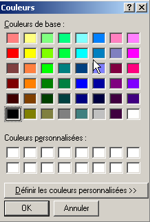
If the user closes the dialog box using the OK button, the result of the ShowDialog method is DialogResult.OK, and the selected color is stored in the Color property of the ColorDialog object used. The ShowDialog method of the FontDialog class allows you to select a font:
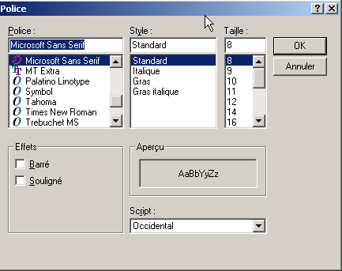
If the user closes the dialog box by clicking the OK button, the result of the ShowDialog method is DialogResult.OK, and the selected font is stored in the Font property of the FontDialog object used. We have the elements to handle clicks on the Color and Font buttons:
Private Sub btnColor_Click(ByVal sender As Object, ByVal e As System.EventArgs) _
Handles btnColor.Click
' Select a text color
If colorDialog1.ShowDialog() = DialogResult.OK Then
' change the TextBox's ForeColor property
txtText.ForeColor = colorDialog1.Color
End If
End Sub
Private Sub btnFont_Click(ByVal sender As Object, ByVal e As System.EventArgs) _
Handles btnFont.Click
' Select a font
If fontDialog1.ShowDialog() = DialogResult.OK Then
' Change the font property of the TextBox
txtText.Font = fontDialog1.Font
End If
End Sub
5.7.3. Timer
Here, we propose to write the following application:
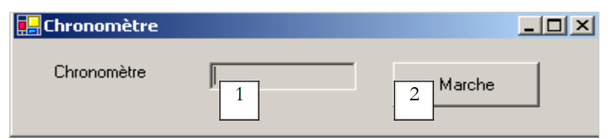 |
No. | Type | Name | Role |
1 | TextBox, ReadOnly=true | txtChrono | displays a timer |
2 | Button | btnStopStart | Stop/Start button for the stopwatch |
3 | Timer | timer1 | component that triggers an event every second |
The timer is running:

The timer stopped:
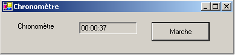
To update the contents of the txtChrono TextBox every second, we need a component that generates an event every second, which we can intercept to update the stopwatch display. This component is the Timer:

Once this component is added to the form (in the non-visual components section), a Timer object is created in the form’s constructor. The System.Windows.Forms.Timer class is defined as follows:

Of its properties, we will only consider the following:
number of milliseconds after which a Tick event is triggered. | |
the event triggered at the end of Interval milliseconds | |
sets the timer to active (true) or inactive (false) |
In our example, the timer is called timer1 and timer1.Interval is set to 1000 ms (1s). The Tick event will therefore occur every second. A click on the Start/Stop button is handled by the following procedure:
Private Sub btnStopStart_Click(ByVal sender As Object, ByVal e As System.EventArgs) _
Handles btnArretMarche.Click
' Stop or Start?
If btnArretMarche.Text = "Start" Then
' record the start time
start = DateTime.Now
' it is displayed
txtChrono.Text = "00:00:00"
' start the timer
timer1.Enabled = True
' change the button label
btnArretMarche.Text = "Stop"
' end
Return
End If '
If btnStopStart.Text = "Stop" Then
' stop the timer
timer1.Enabled = False
' change the button label
btnArretMarche.Text = "Start"
' end
Return
End If
End Sub
Private Sub timer1_Tick(ByVal sender As Object, ByVal e As System.EventArgs) _
Handles timer1.Tick
' One second has elapsed
Dim now As DateTime = DateTime.Now
Dim duration As TimeSpan = DateTime.op_Subtraction(now, start)
txtChrono.Text = "" + duration.Hours.ToString("d2") + ":" + duration.Minutes.ToString("d2") + ":" + duration.Seconds.ToString("d2")
End Sub
The label of the Start/Stop button is either "Stop" or "Start". We therefore have to check this label to determine what to do.
- If the label is "Start", we store the start time in a global variable of the form object, the timer is started (Enabled=true), and the button label changes to "Stop".
- If the label is "Stop", the timer is stopped (Enabled=false) and the button label is changed to "Start".
Public Class Timer1
Inherits System.Windows.Forms.Form
Private WithEvents timer1 As System.Windows.Forms.Timer
Private WithEvents btnStopStart As System.Windows.Forms.Button
Private components As System.ComponentModel.IContainer
Private WithEvents txtChrono As System.Windows.Forms.TextBox
Private WithEvents label1 As System.Windows.Forms.Label
' instance variables
Private start As DateTime
The start attribute above is known in all methods of the class. We still need to handle the Tick event on the timer1 object, an event that occurs every second:
Private Sub timer1_Tick(ByVal sender As Object, ByVal e As System.EventArgs) _
Handles timer1.Tick
' one second has elapsed
Dim now As DateTime = DateTime.Now
Dim duration As TimeSpan = DateTime.op_Subtraction(now, start)
txtChrono.Text = "" + duration.Hours.ToString("d2") + ":" + duration.Minutes.ToString("d2") + ":" + duration.Seconds.ToString("d2")
End Sub
We calculate the time elapsed since the stopwatch was started. We obtain a TimeSpan object representing a duration. This must be displayed in the timer in the format hh:mm:ss. To do this, we use the Hours, Minutes, and Seconds properties of the TimeSpan object, which represent the hours, minutes, and seconds of the duration, respectively. We display them using the ToString("d2") format to ensure a two-digit display.
5.8. The tax calculation Example
We return to the IMPOTS application, which we have already covered twice. We now add a graphical user interface to it:
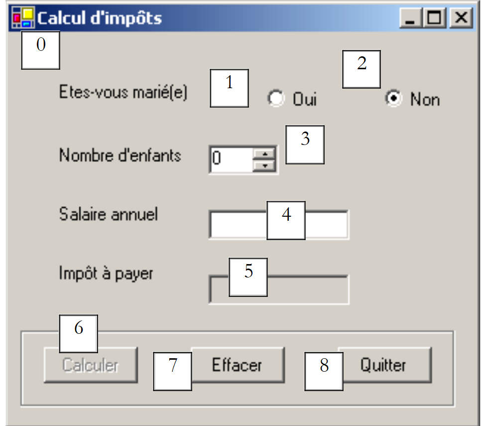 |
The controls are as follows
No. | type | name | role |
RadioButton | rdYes | checked if married | |
RadioButton | rdNo | Checked if not married | |
NumericUpDown | incChildren | number of the taxpayer's children Minimum=0, Maximum=20, Increment=1 | |
TextBox | txtSalary | taxpayer's annual salary in F | |
TextBox | txtTaxes | amount of tax due ReadOnly=true | |
Button | btnCalculate | starts the tax calculation | |
Button | btnClear | resets the form to its initial state upon loading | |
Button | btnExit | to exit the application |
Operating Rules
- The Calculate button remains disabled as long as the salary field is empty
- If, when the calculation is run, the salary turns out to be incorrect, an error is reported:

The program is shown below. It uses the Impot class created in the chapter on classes. Some of the code automatically generated by VS.NET has not been reproduced here.
using System;
using System.Drawing;
using System.Collections;
using System.ComponentModel;
using System.Windows.Forms;
using System.Data;
' options
Option Explicit On
Option Strict On
' namespaces
Imports System
Imports System.Drawing
Imports System.Collections
Imports System.ComponentModel
Imports System.Windows.Forms
Imports System.Data
' form class
Public Class frmTaxes
Inherits System.Windows.Forms.Form
Private WithEvents label1 As System.Windows.Forms.Label
Private WithEvents rdYes As System.Windows.Forms.RadioButton
Private WithEvents rdNo As System.Windows.Forms.RadioButton
Private WithEvents label2 As System.Windows.Forms.Label
Private WithEvents txtSalary As System.Windows.Forms.TextBox
Private WithEvents label3 As System.Windows.Forms.Label
Private WithEvents label4 As System.Windows.Forms.Label
Private WithEvents groupBox1 As System.Windows.Forms.GroupBox
Private WithEvents btnCalculate As System.Windows.Forms.Button
Private WithEvents btnClear As System.Windows.Forms.Button
Private WithEvents btnExit As System.Windows.Forms.Button
Private WithEvents txtTaxes As System.Windows.Forms.TextBox
Private components As System.ComponentModel.Container = Nothing
Private WithEvents incChildren As System.Windows.Forms.NumericUpDown
' data arrays required for tax calculation
Private limits() As Decimal = {12620D, 13190D, 15640D, 24740D, 31810D, 39970D, 48360D, 55790D, 92970D, 127860D, 151250D, 172040D, 195000D, 0D}
Private coeffR() As Decimal = {0D, 0.05D, 0.1D, 0.15D, 0.2D, 0.25D, 0.3D, 0.35D, 0.4D, 0.45D, 0.55D, 0.5D, 0.6D, 0.65D}
Private coeffN() As Decimal = {0D, 631D, 1290.5D, 2072.5D, 3309.5D, 4900D, 6898.5D, 9316.5D, 12106D, 16754.5D, 23147.5D, 30710D, 39312D, 49062D}
' tax object
Private objTax As Tax = Nothing
Public Sub New()
InitializeComponent()
' initialize the form
btnClear_Click(Nothing, Nothing)
btnCalculate.Enabled = False
' create a tax object
Try
objTax = New Tax(limits, coeffR, coeffN)
Catch ex As Exception
MessageBox.Show("Unable to create the tax object (" + ex.Message + ")", "Error", MessageBoxButtons.OK, MessageBoxIcon.Error)
' Disable the salary input field
txtSalary.Enabled = False
End Try 'try-catch
End Sub
Protected Overloads Sub Dispose(ByVal disposing As Boolean)
....
End Sub
Private Sub InitializeComponent()
Me.btnQuit = New System.Windows.Forms.Button
Me.groupBox1 = New System.Windows.Forms.GroupBox
Me.btnClear = New System.Windows.Forms.Button
Me.btnCalculate = New System.Windows.Forms.Button
Me.txtSalary = New System.Windows.Forms.TextBox
Me.label1 = New System.Windows.Forms.Label
Me.label2 = New System.Windows.Forms.Label
Me.label3 = New System.Windows.Forms.Label
Me.rdNon = New System.Windows.Forms.RadioButton
Me.txtTaxes = New System.Windows.Forms.TextBox
Me.label4 = New System.Windows.Forms.Label
Me.rdYes = New System.Windows.Forms.RadioButton
Me.incEnfants = New System.Windows.Forms.NumericUpDown
Me.groupBox1.SuspendLayout()
CType(Me.incEnfants, System.ComponentModel.ISupportInitialize).BeginInit()
Me.SuspendLayout()
....
End Sub 'InitializeComponent
Public Shared Sub Main()
Application.Run(New frmImpots)
End Sub 'Main
Private Sub btnClear_Click(ByVal sender As Object, ByVal e As System.EventArgs) _
Handles btnClear.Click
' Clear the form
incEnfants.Value = 0
txtSalary.Text = ""
txtTaxes.Text = ""
rdNon.Checked = True
End Sub 'btnClear_Click
Private Sub txtSalary_TextChanged(ByVal sender As Object, ByVal e As System.EventArgs) _
Handles txtSalary.TextChanged
' Calculate button state
btnCalculate.Enabled = txtSalary.Text.Trim() <> ""
End Sub 'txtSalary_TextChanged
Private Sub btnQuitter_Click(ByVal sender As Object, ByVal e As System.EventArgs) _
Handles btnExit.Click
' End Application
Application.Exit()
End Sub 'btnQuitter_Click
Private Sub btnCalculate_Click(ByVal sender As Object, ByVal e As System.EventArgs) _
Handles btnCalculate.Click
' Is the salary correct?
Dim intSalary As Integer = 0
Try
' Retrieve salary
intSalary = Integer.Parse(txtSalary.Text)
' it must be >= 0
If intSalary < 0 Then
Throw New Exception("")
End If
Catch ex As Exception
' error message
MessageBox.Show(Me, "Incorrect salary", "Input error", MessageBoxButtons.OK, MessageBoxIcon.Error)
' focus on the incorrect field
txtSalary.Focus()
' Select text in the input field
txtSalary.SelectAll()
' return to the visual interface
Return
End Try 'try-catch
' the salary is correct - calculate the tax
txtTaxes.Text = "" & CLng(objTax.calculate(rdYes.Checked, CInt(childrenCount.Value), intSalary))
End Sub 'btnCalculate_Click
End Class
Here we use the impots.dll assembly, which is the result of compiling the impots class from Chapter 2. Recall that this assembly can be generated in console mode using the command
This command generates the impots.dll file, known as an assembly. This assembly can then be used in various projects. Here, in our project under VS.NET, we use the project properties window:

To add a reference (an assembly), we right-click on the References group above, select the [Add Reference] option, and specify the [impots.dll] assembly that we have placed in the project folder:
dos>dir
03/01/2004 14:39 9,250 gui_impots.vb
03/01/2004 14:37 4,096 impots.dll
03/01/2004 14:41 12,288 gui_impots.exe
Once the assembly [impots.dll] is included in the project, the [impots] class becomes known to the project. Previously, it was not. Another method is to include the source file impots.vb in the project. To do this, in the project properties window, right-click on the project, select the [Add/Add Existing Item] option, and specify the impots.vb file.